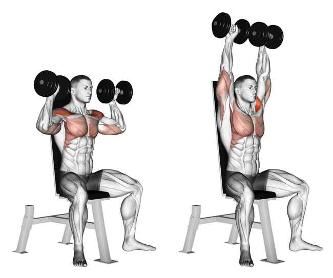

Chest Press
Lie on a bench or floor with a dumbbell in each hand. If you use a bench, you may have your feet up on the bench
or on the floor, whichever is comfortable for bench height and your body and leg length. Keep elbows forward of
the shoulder line to avoid stress on the shoulder joint. The palms should face forward and your thumbs should be
wrapped around the handle. Push the weights upward while exhaling, taking care not to lock out the elbows in an
explosive movement. The weights should follow a shallow arc and almost meet over the top of the chest. Lower the
weights, muscles contracted, while inhaling and controlling the return to the starting position.
Leg Press
Brace your abdominal muscles and push the platform away with your heels and forefoot. Your heels should remain flat
on the footplate. The front of your foot or toes should never be used exclusively to move the pad forward. While exhaling,
extend your legs and keep your head and back flat against the seat pad. Extend with slow control rather than with an explosive
movement. While inhaling, return the footplate to the starting position by gradually bending the knees. Keep the feet and back
flat throughout. If you have never done leg presses, start modestly with three sets of 10 leg presses. You can advance from there
as you build strength.
Shoulder Press

To do a shoulder press, stand with feet shoulder-width apart and hold the dumbbells at shoulder height with your
elbows at a 90-degree angle. Slowly lift the dumbbells above your head without fully straightening your arms.
Pause at the top. Slowly return to the start position. Locking your elbows when you reach the top of your lift will transfer
tension from your deltoids to your triceps, which aren't the target. To keep the contraction in your shoulder muscles and increase
the efficacy of the exercise, avoid completely locking out your arms. If you find this too difficult, reduce the weight you are using.